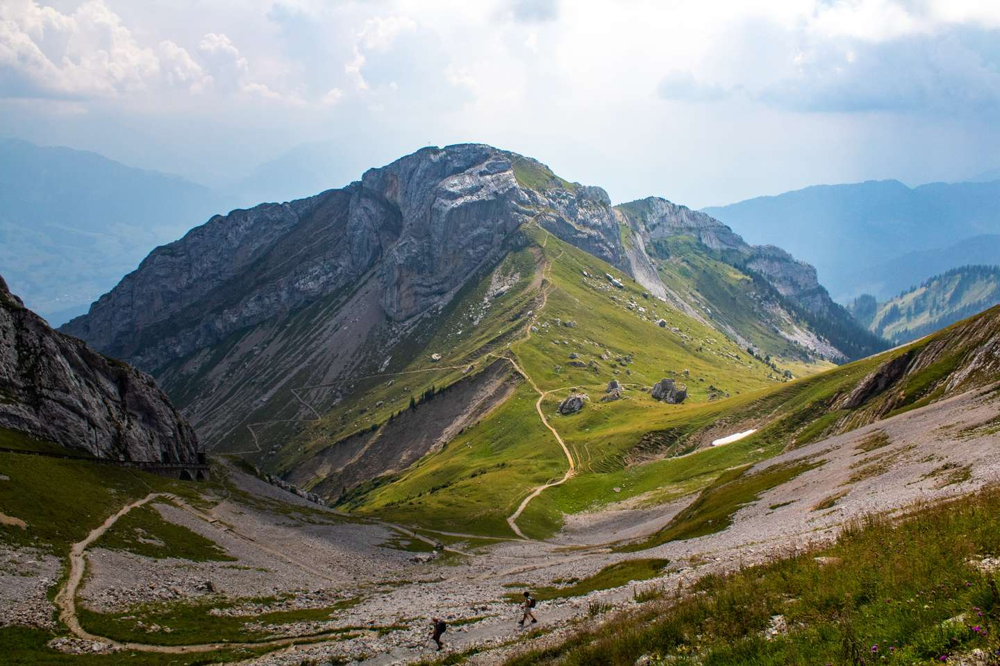

Skip to main content
Home
Trails
Storybook
Magic Forest Trail
Scroll down to explore
Trails
Full Trail
Gumen - Braunwald
Variation One
Gumen - Braunwald
Variation Two
Gumen - Braunwald
Variation Three
Gumen - Braunwald

Variation Four
Gumen - Braunwald
Variation Five
Gumen - Braunwald